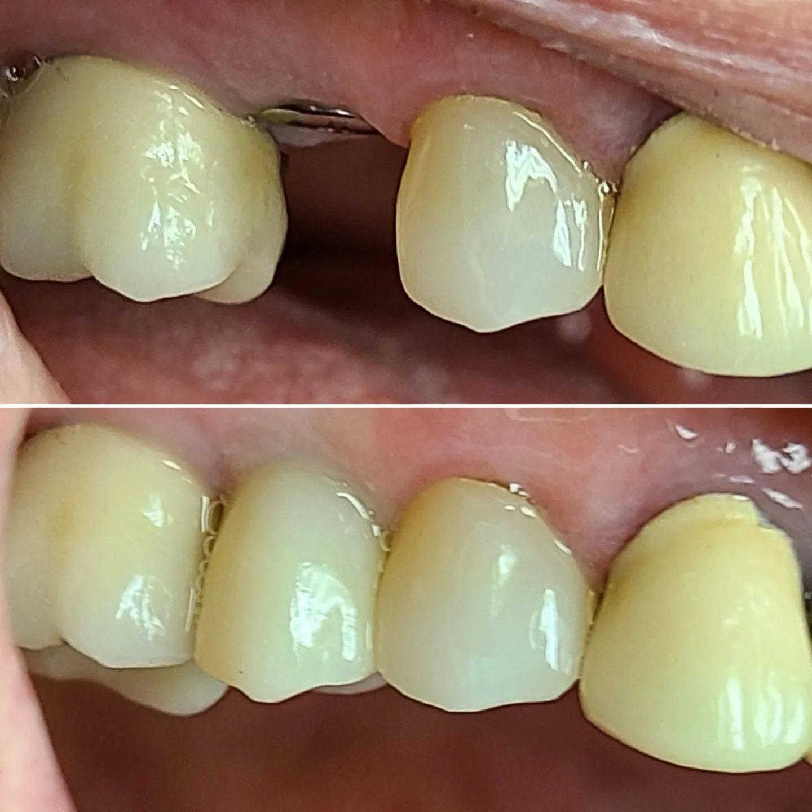
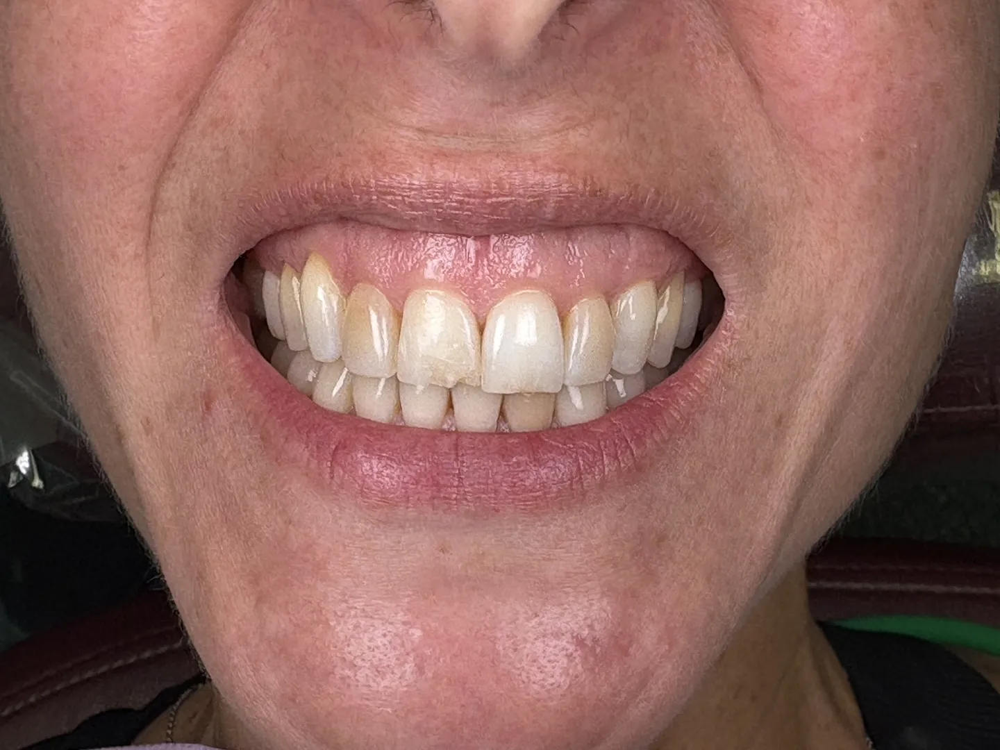

Servicios
Atención planificada como una cirugía, explicada como una conversación
Desde un solo implante hasta una sonrisa nueva completa, y desde una limpieza hasta un diente roto un viernes por la tarde. Todo tratamiento comienza con un examen y una explicación clara de sus opciones.
Odontología de implantes
Implantes dentales

Un implante dental es un pequeño poste de titanio que se coloca en el hueso de la mandíbula, donde antes estaba la raíz de un diente. Una vez que se ha unido al hueso, sostiene una corona hecha a la medida que se ve, se siente y funciona como un diente natural. Los implantes pueden reemplazar un diente, varios dientes, o sostener una arcada completa.
El Dr. Kwon coloca los implantes personalmente. Tiene una maestría en Implantología Dental y Extracciones Quirúrgicas Avanzadas y enseña cirugía de implantes a otros dentistas, de modo que su caso lo planifica y lo realiza la misma persona.
Quién es candidato
La mayoría de los adultos a quienes les falta un diente y tienen suficiente hueso sano. En su consulta, el Dr. Kwon revisa sus estudios de imagen, sus encías y su salud general, y le dice con claridad si un implante es la mejor opción.
Odontología de implantes
Implantes dentales en el mismo día
Para el paciente indicado, el implante y un diente temporal pueden colocarse en una sola visita, de modo que usted sale con una sonrisa completa mientras el implante sana por debajo.
La colocación en el mismo día no es adecuada para todos. Depende de la calidad del hueso, la salud de las encías y la forma en que sus dientes encajan al morder. El Dr. Kwon solo la recomienda cuando resistirá con el mismo estándar a largo plazo que un implante tradicional.
Reconstrucción de boca completa
All-on-4, All-on-X y X-on-X
Cuando la mayoría o todos los dientes de una arcada superior o inferior están fallando o se han perdido, un puente fijo sostenido por cuatro o más implantes puede reemplazar toda la arcada. A diferencia de una dentadura postiza, no se quita.
All-on-4 usa cuatro implantes. All-on-X usa más cuando su hueso o su mordida requieren un apoyo adicional. El Dr. Kwon decide el número a partir de sus imágenes y su examen, y planifica con usted toda la secuencia antes de que comience el tratamiento. La reconstrucción de boca completa y All-on-X son una parte central de su práctica.
Estético y restaurador
Rediseño de sonrisa

Un rediseño de sonrisa reúne forma, color, proporción y función en un solo plan. Puede combinar carillas, coronas, blanqueamiento y trabajos restauradores, diseñados como un único resultado y no un diente a la vez.
Cada rediseño se planifica como un proyecto clínico tanto como estético, para que la nueva sonrisa sea tan fuerte como hermosa. Vea fotos de antes y después (en inglés) de nuestros propios pacientes.
Estético y restaurador
Carillas y coronas
Las carillas son láminas delgadas hechas a la medida que se adhieren a la parte frontal de los dientes para cambiar su forma, su largo o su color.
Las coronas cubren y protegen un diente que está agrietado, con muchos empastes o debilitado, o se colocan sobre un implante. Los materiales modernos, como la zirconia, son resistentes y se ven naturales, y pueden reemplazar las coronas antiguas con base de metal que muestran líneas oscuras en la encía.
Planificación
Diseño virtual de sonrisa
Antes de preparar cualquier diente, las imágenes digitales crean una vista previa de su nueva sonrisa. Usted ve el resultado propuesto, lo conversa con el Dr. Kwon y pide cambios cuando todavía es fácil hacerlos.
Una vista previa digital es una herramienta de planificación, no una garantía. Ayuda a usted y a su dentista a ponerse de acuerdo sobre la meta antes de comenzar el trabajo.
Conservar los dientes naturales
Tratamiento de conducto
Cuando el nervio dentro de un diente se infecta o se inflama, un tratamiento de conducto elimina el origen del dolor, limpia y sella el interior del diente, y le permite conservarlo. Después, el diente generalmente se protege con una corona.
El tratamiento se realiza con anestesia local. Muchos pacientes sienten que es muy parecido a que le hagan un empaste, y el alivio posterior suele ser inmediato.
Para toda la familia
Atención familiar, preventiva y de emergencia
Los implantes y los rediseños son lo que nos distingue, pero atendemos a toda la familia, todos los días.
Atención preventiva
Exámenes minuciosos, limpiezas y radiografías que protegen su sonrisa a largo plazo.
Odontología de emergencia
Atención rápida para dolores de muela fuertes, dientes rotos o que se salieron, coronas y empastes perdidos, abscesos y lesiones. Con frecuencia atendemos a los pacientes con dolor el mismo día.
Extracciones dentales
Extracción delicada de dientes dañados y de muelas del juicio, incluidas las extracciones quirúrgicas.
Blanqueamiento dental
Blanqueamiento profesional para una sonrisa más brillante, por sí solo o como parte de un rediseño.
Alineadores transparentes
Alineadores removibles para enderezar los dientes, con un plan diseñado en torno a su rutina.
Dentaduras postizas
Dentaduras completas y parciales, y opciones con implantes para los pacientes que desean algo que no se mueva.
“Not only is the staff friendly and patient, but the dentist himself was very easy to speak with about my concerns. They were also wonderful to my kids, talked them through each step, made them feel comfortable.”
Mike P., paciente de Stamford
Cómo funciona
De la primera visita al resultado final
Consulta y examen
Revisamos su historial, examinamos sus dientes y encías, y tomamos las imágenes que necesitamos. Nuestro consultorio de Stamford usa escáneres 3D CBCT y cámaras intraorales, para que usted vea exactamente lo que vemos nosotros. Usted se va con una idea clara de cómo está su salud dental.
Un plan por escrito
Cada procedimiento, su propósito y su orden, junto con un estimado de lo que el seguro podría cubrir y de lo que usted pagaría.
Tratamiento
Se realiza con equipo moderno y una técnica cuidadosa. Le explicamos lo que sucede en cada paso.
Seguimiento
Revisamos la cicatrización y los resultados, y seguimos atendiéndolo para asegurar que el trabajo dure.
Preguntas sobre el tratamiento
Lo que preguntan los pacientes
¿Cuánto dura un implante?
Un implante colocado en hueso sano y bien cuidado está pensado para durar muchos años, con frecuencia décadas. Es posible que la corona que va encima tenga que reemplazarse algún día, pero el implante en sí está pensado como una solución a largo plazo.
¿Duele recibir un implante?
El procedimiento se realiza con anestesia local, y a la mayoría de los pacientes les sorprende lo llevadero que es. Le explicamos qué esperar durante la cicatrización y cómo mantenerse cómodo.
¿Cuál es la diferencia entre All-on-4 y All-on-X?
All-on-4 sostiene una arcada completa sobre cuatro implantes. All-on-X usa más implantes cuando su hueso o su mordida necesitan un apoyo adicional. El Dr. Kwon elige el número a partir de sus estudios de imagen.
¿Cuántas carillas voy a necesitar?
Depende de qué dientes se ven cuando usted sonríe y de cuáles necesitan corrección. El Dr. Kwon lo decide con usted en su examen y en su visita de diseño de sonrisa.
¿Atienden a niños?
Atendemos a pacientes de todas las edades, y las familias son bienvenidas. Llame al consultorio para reservar.
¿Listo para hablar sobre su sonrisa?
Reserve una consulta en el consultorio más cercano a usted. Traiga sus preguntas.